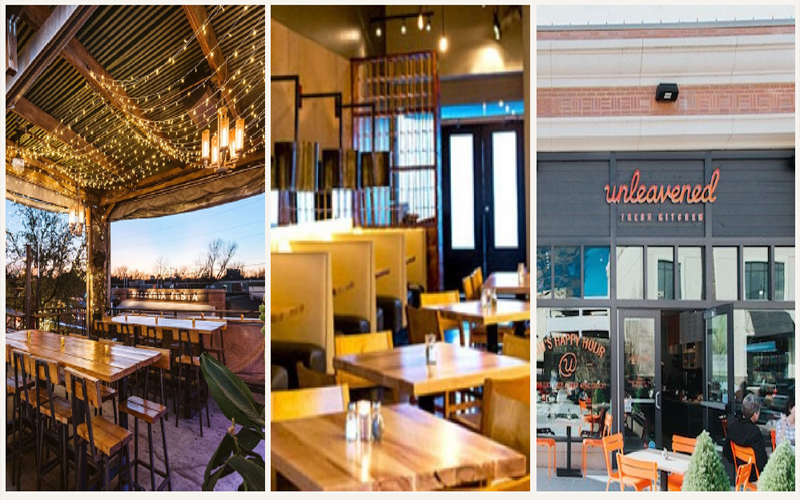

PALATEDallas, Texas is a city that offers a delightful fusion of flavors and culinary experiences. From upscale dining to casual eateries, there's something
for every food lover. In this blog post, we'll explore four fantastic restaurants in Dallas and their signature dishes that will leave you craving for more.
Sundown at Granada – Herb Roaster Carnival Cauliflower: Located in the vibrant Lower Greenville neighborhood, Sundown at Granada is a must-visit for culinary enthusiasts. Their Herb Roaster Carnival Cauliflower is a true masterpiece, featuring perfectly roasted cauliflower florets seasoned with a blend of aromatic herbs and spices. The dish offers a delightful medley of flavors and textures that will captivate your taste buds.
The Cookie Crave – Strawberry Margarita: Indulge your sweet tooth at The Cookie Crave, a dessert haven in Dallas. Their Strawberry Margarita cookie is a delectable treat that combines the flavors of fresh strawberries and tangy lime. With a perfect balance of sweetness and a hint of zest, this cookie is a delightful indulgence that pairs well with a cup of coffee or a refreshing glass of milk.
Origin Kitchen and Bar – Gluten-Free Fried Calamari: Origin Kitchen and Bar is a haven for health-conscious foodies seeking gluten-free options. Their Gluten-Free Fried Calamari is a delightful twist on a classic appetizer. The calamari is coated in a light and crispy gluten-free batter, creating a satisfying crunch with each bite. Served with a zesty dipping sauce, this dish is a testament to the fact that gluten-free can be equally delicious and satisfying.
Unleavened Fresh Kitchen – Market Offer: For a fresh and flavorful dining experience, look no further than Unleavened Fresh Kitchen. Their Market Offer is a daily-changing dish that showcases the best seasonal ingredients. From vibrant salads to wholesome grain bowls, each Market Offer is a unique creation that reflects the culinary creativity and commitment to using high-quality, locally sourced ingredients.
Dallas, Texas is a culinary haven with an array of dining options that cater to every palate. Whether you're in the mood for innovative vegetarian dishes, mouthwatering desserts, gluten-free delights, or wholesome market-inspired creations, the city has it all. Embark on a gastronomic journey through Dallas and savor the incredible flavors that await you at Sundown at Granada with their Herb Roaster Carnival Cauliflower, The Cookie Crave with their Strawberry Margarita cookie, Origin Kitchen and Bar with their Gluten-Free Fried Calamari, and Unleavened Fresh Kitchen with their daily-changing Market Offer. These restaurants [offer unique culinary experiences that showcase the diverse and vibrant food scene in Dallas, making it a destination for food lovers from near and far.
Sundown at Granada – Herb Roaster Carnival Cauliflower: Located in the vibrant Lower Greenville neighborhood, Sundown at Granada is a must-visit for culinary enthusiasts. Their Herb Roaster Carnival Cauliflower is a true masterpiece, featuring perfectly roasted cauliflower florets seasoned with a blend of aromatic herbs and spices. The dish offers a delightful medley of flavors and textures that will captivate your taste buds.
The Cookie Crave – Strawberry Margarita: Indulge your sweet tooth at The Cookie Crave, a dessert haven in Dallas. Their Strawberry Margarita cookie is a delectable treat that combines the flavors of fresh strawberries and tangy lime. With a perfect balance of sweetness and a hint of zest, this cookie is a delightful indulgence that pairs well with a cup of coffee or a refreshing glass of milk.
Origin Kitchen and Bar – Gluten-Free Fried Calamari: Origin Kitchen and Bar is a haven for health-conscious foodies seeking gluten-free options. Their Gluten-Free Fried Calamari is a delightful twist on a classic appetizer. The calamari is coated in a light and crispy gluten-free batter, creating a satisfying crunch with each bite. Served with a zesty dipping sauce, this dish is a testament to the fact that gluten-free can be equally delicious and satisfying.
Unleavened Fresh Kitchen – Market Offer: For a fresh and flavorful dining experience, look no further than Unleavened Fresh Kitchen. Their Market Offer is a daily-changing dish that showcases the best seasonal ingredients. From vibrant salads to wholesome grain bowls, each Market Offer is a unique creation that reflects the culinary creativity and commitment to using high-quality, locally sourced ingredients.
Dallas, Texas is a culinary haven with an array of dining options that cater to every palate. Whether you're in the mood for innovative vegetarian dishes, mouthwatering desserts, gluten-free delights, or wholesome market-inspired creations, the city has it all. Embark on a gastronomic journey through Dallas and savor the incredible flavors that await you at Sundown at Granada with their Herb Roaster Carnival Cauliflower, The Cookie Crave with their Strawberry Margarita cookie, Origin Kitchen and Bar with their Gluten-Free Fried Calamari, and Unleavened Fresh Kitchen with their daily-changing Market Offer. These restaurants [offer unique culinary experiences that showcase the diverse and vibrant food scene in Dallas, making it a destination for food lovers from near and far.